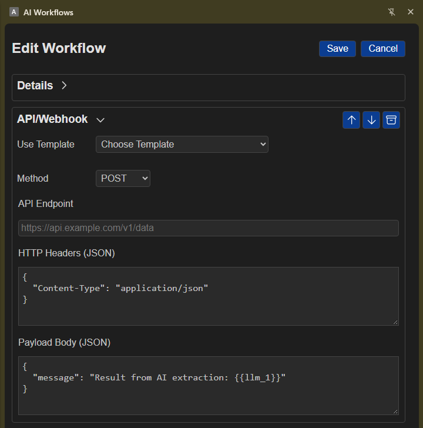

API/Webhook (api)
The API/Webhook plugin sends an HTTP request to an API endpoint or webhook and returns the response body. It supports common HTTP methods, configurable JSON headers and payloads, and workflow template values.

Plugin Overview
| Property | Value |
|---|---|
| Plugin Label | API/Webhook |
Step Type (type) |
api |
| Variable ID Prefix | api (e.g., api_1, api_2) |
| Group / Category | Not specified |
| Authentication | No built-in authentication; configure headers as needed |
Configuration Fields
Field Key (config.*) |
Form Label | Type | Required | Description & Token Examples |
|---|---|---|---|---|
method |
Method | select (GET | POST | PUT | PATCH | DELETE) |
Yes | HTTP request method. Default: POST. |
url |
API Endpoint | string |
Yes | Request URL; must be a valid HTTP or HTTPS URL. Template values are resolved at runtime, e.g. {{globals.api_url}}. |
headers |
HTTP Headers (JSON) | string (JSON object) |
No | Optional JSON object of string-valued headers. Defaults to {"Content-Type":"application/json"}. Header values can use tokens, e.g. {"X-Workflow-Value":"{{globals.header_value}}"}. |
body |
Payload Body (JSON) | string (JSON) |
No | JSON request payload. Defaults to {"message":"Result from AI extraction: {{llm_1}}"}. Supports tokens such as {{extract_1.title}}. An empty body uses the most recent non-global step output as the payload, with userInput included when present. |
Template Tokens & State Output
Available Input Tokens
Template values in the endpoint, headers, and body are resolved against workflow state. For example, use {{extract_1.title}} or {{globals.api_url}}. The workflow's userInput is also added to a non-GET request body when present; for GET requests it is added as a userInput query parameter.
Output State
The step output is the response body, not a wrapper object:
- For a JSON response, the output is the parsed JSON value. Reference it directly with
{{api_1}}or reference returned properties, such as{{api_1.id}}when the response contains anidproperty. - For a non-JSON response, the output is the response text and can be referenced with
{{api_1}}.
API Template
These templates represent common API integrations that can be used within the API plugin.# Selecting a template will pre-fill the API configuration with the necessary endpoint, headers, and body structure for that integration.
- Discord Post
- GitHub Create Issue
- Notion Create Page in Database
- n8n Workflow (Local)
- n8n Workflow (Cloud)
- Todoist Create Task
- Telegram Send Notification
- ClickUp Create Task
Example Workflow Configuration (JSON)
{
"id": "api_1",
"type": "api",
"config": {
"method": "POST",
"url": "https://api.example.com/v1/data",
"headers": "{\"Content-Type\":\"application/json\"}",
"body": "{\"message\":\"{{llm_1}}\"}"
}
}